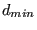

Next: START OF THE REFINEMENT Up: Mesh refining procedure Previous: first loop: getlocalresults.f Contents
For the second and further loops only the field d(*) containing the length of the edges and  has to be determined. The h-field is obtained by interpolation within the unrefined mesh.